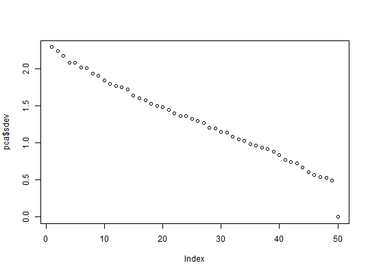

Get k or all Principal Components (PCs) of a big.matrix.
BigPCA(X, block.size, k = NULL, ind.train = seq(nrow(X)), vec.center = rep(0, ncol(X)), vec.scale = rep(1, ncol(X)), thr.eigval = 0.001, use.Eigen = TRUE, progress = TRUE)
colmeans.colsds.1e-3.Eigen library to compute
\(X X^T\)? TRUE is the default.
If FALSE, use R's tcrossprod. See details.TRUE.A matrix of PCs.
See BigXYt.
Note that for the Eigen decomposition, only R is
used because is faster (see http://goo.gl/UYJcCw).
If you want a large number of eigenvectors/values, you should
really considerer using Microsoft R Open for speed.
prcomp
# Function for comparing diffPCs <- function(test, rot) { k <- ncol(test) diff1 <- test - rot[, 1:k] diff2 <- test + rot[, 1:k] diff <- pmin(abs(diff1), abs(diff2)) max(diff) } ### PRIMAL # Simulating some data X <- big.matrix(100, 50, shared = FALSE) X[] <- rnorm(length(X)) # center and scale vec.center <- colmeans(X) vec.scale <- colsds(X) # Comparing with prcomp test <- BigPCA(X = X, block.size = 10, vec.center = vec.center, vec.scale = vec.scale)#> | | | 0% | |===== | 7% | |========= | 13% | |============== | 20% | |=================== | 27% | |======================= | 33% | |============================ | 40% | |================================= | 47% | |===================================== | 53% | |========================================== | 60% | |=============================================== | 67% | |=================================================== | 73% | |======================================================== | 80% | |============================================================= | 87% | |================================================================= | 93% | |======================================================================| 100%pca <- prcomp(X[,], center = TRUE, scale. = TRUE) # PCs are the same or opposite print(diffPCs(test, pca$x))#> [1] 2.794709e-13# Using only half of the data for "training" ind <- sort(sample(nrow(X), nrow(X)/2)) vec.center <- colmeans(X, ind) vec.scale <- colsds(X, ind) test <- BigPCA(X = X, block.size = 10, ind.train = ind, vec.center = vec.center, vec.scale = vec.scale)#> | | | 0% | |===== | 7% | |========= | 13% | |============== | 20% | |=================== | 27% | |======================= | 33% | |============================ | 40% | |================================= | 47% | |===================================== | 53% | |========================================== | 60% | |=============================================== | 67% | |=================================================== | 73% | |======================================================== | 80% | |============================================================= | 87% | |================================================================= | 93% | |======================================================================| 100%pca <- prcomp(X[ind, ], center = TRUE, scale. = TRUE) print(diffPCs(test[ind, ], pca$x))#> [1] 3.831935e-13pred <- predict(pca, X[-ind, ]) print(diffPCs(test[-ind, ], pred))#> [1] 4.688472e-13### DUAL # Simulating some data X <- big.matrix(50, 100, shared = FALSE) X[] <- rnorm(length(X)) # center and scale vec.center <- colmeans(X) vec.scale <- colsds(X) # Comparing with prcomp test <- BigPCA(X = X, block.size = 10, vec.center = vec.center, vec.scale = vec.scale)#> | | | 0% | |======= | 10% | |============== | 20% | |===================== | 30% | |============================ | 40% | |=================================== | 50% | |========================================== | 60% | |================================================= | 70% | |======================================================== | 80% | |=============================================================== | 90% | |======================================================================| 100%pca <- prcomp(X[,], center = TRUE, scale. = TRUE) # Note the difference in dimensions print(dim(test))#> [1] 50 49print(dim(pca$x))#> [1] 50 50plot(pca$sdev)print(pca$sdev[50])#> [1] 1.018636e-15# PCs are the same or opposite print(diffPCs(test, pca$x))#> [1] 2.450706e-12# Using only half of the data for "training" ind <- sort(sample(nrow(X), nrow(X)/2)) vec.center <- colmeans(X, ind) vec.scale <- colsds(X, ind) test <- BigPCA(X = X, block.size = 10, ind.train = ind, vec.center = vec.center, vec.scale = vec.scale)#> | | | 0% | |======= | 10% | |============== | 20% | |===================== | 30% | |============================ | 40% | |=================================== | 50% | |========================================== | 60% | |================================================= | 70% | |======================================================== | 80% | |=============================================================== | 90% | |======================================================================| 100%pca <- prcomp(X[ind, ], center = TRUE, scale. = TRUE) print(diffPCs(test[ind, ], pca$x))#> [1] 7.891465e-13pred <- predict(pca, X[-ind, ]) print(diffPCs(test[-ind, ], pred))#> [1] 3.039791e-13